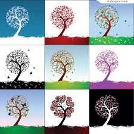

Season
A season is a part of a year. Most areas of the Earth have four seasons in a year: spring, summer, autumn (British English) or fall (US English), and winter. In some areas there are a different number of seasons. For example, in the tropical parts of Australia (in the northern parts of Queensland, Western Australia and the Northern Territory), wet and dry seasons are also observed. These are in addition to, or replace the regular season names.[1] In places which are tropical and subtropical, there are two seasons: the rainy (or wet, or monsoon) season and the dry season. This is because the rain changes more than the temperature. Summer is a warm season because the days are longer and the Sun is high in the sky, giving direct light to the ground. Winter is a cold season because the days are shorter and the Sun is low in the sky, giving indirect light to the ground. Both the changes in the length of the day and the height of the Sun at noon are caused by the tilt of the Earth's spin axis with respect to the plane of the Earth's path around the Sun. At any time, in any season, the northern and southern hemispheres (halves of the Earth) have opposite seasons.